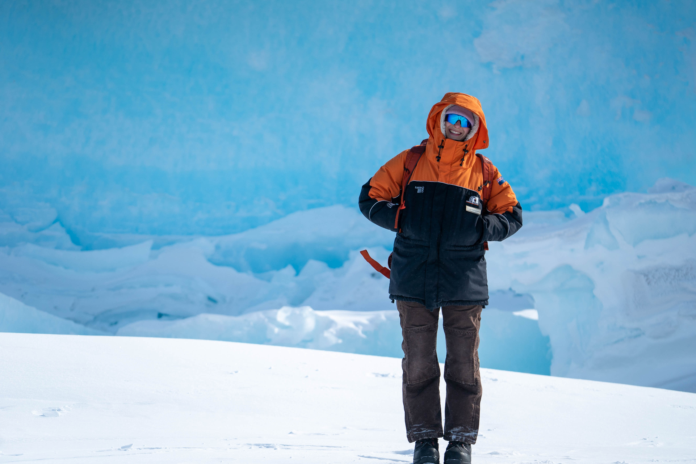

I am a PhD student at Swansea University in the Centre of Expertise for Ice and Climate. My interests are very broad, encompassing geophysics, glaciology, and polar engineering. My current focus is on using geophysical methods to understand how a warming climate influences the formation and drainage of melt lakes that form on the surface of glaciers. I hold a Bachelors and Masters in Mechanical Engineering from the University of Canterbury where I developed two new, low cost, light weight ice core drills that are designed to operate in hot water boreholes.
PhD in Glaciology and Geophysics, in progress
Swansea University, United Kingdom
Advisory team: Bernd Kulessa, Adrian Luckman, Seth Campbell,
Sammie Buzzard, Danny Feltham
MEng in Mechanical Engineering, 2025
Design and development of rapid ice sampling equipment for Antarctica
University of Canterbury, New Zealand
Advisors: David Prior and Geoff Rodgers
BEng (Hons) in Mechanical Engineering, 2023
University of Canterbury, New Zealand